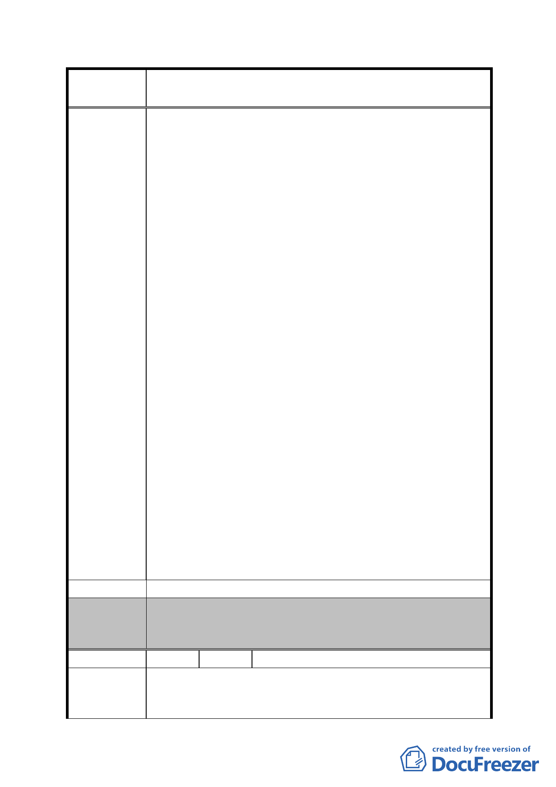

案
名
修訂臺北市「基隆河（中山橋至成美橋段）附近地區土地使
用分區與都市設計管制要點」（北段地區）計畫案
使用之建築物內部的公眾使用設施應集中留設」，意即
如設有公眾使用之設施者，應集中留設。殊難被擴大解
釋為前揭建築物內部「都應留設公眾使用設施」。惟依
貴府 97 年 2 月 l3 日晚說明會上主辦官員之答復卻傾向
於：前開建築物內「應集中留設公眾使用設施」，極易
滋生爭議。
(2)且該款文中並未明定「集中留設」之規範，如其大小、
數量、以及究竟是每樓層一處，或二、三...樓層一處?
抑每樓可以多處?其最小規格若干?於說明會中主辦官員
亦均無法說明。
(3)又依該款文意，除規定設置公眾使用設施時，應集中留
設外，並未規定在公眾設施之外，其私人所有及使用之
空間內不得另外施設諸如廁所、 茶水廚房、及衛浴等設
備。惟依說明會上主辦人員之說明，卻似乎傾向原則上
不許，但如係董事長、總經理…等主管辦公室…應該可
以個案許可… 恐將造成官民更大之爭議及都審人員更
多之困擾。
(4)最重要的是經遍查具法律位階性質之建築法規，迄未見
有對於私人所有之私用建築物內不得施設廁所、茶水廚
房及衛浴設備之規定，而當今稍具規模之公、私辦公室
內設有廁所、茶水間及衛浴設備之情形，至為普遍，且
從未聞有禁止及取締處罰之情事。是 貴府以此連送請市
議會討論通過都沒有，屬行政命令位階之「管制要點」，
就該區建築設定此一明顯有損人民財產權利之「限制」，
既逾越憲法第 23 條所定限制人民權利所須具備之「必
要」條件，更未以法律出之，明顯與該條規定不合，依
憲法第 172 條規定，應屬因違憲而無效之行政命令，爰
請刪除之。
建 議 辦 法 建請刪除該管制要點第十六點第（三）款之規定
一、本案退回市府重行檢討並予重新公開展覽後，再提本會
委 員 會 決 議 審議。
二、所提建議錄請市府檢討參考。
編 號 2 陳情人 謝張招治（A8 金泰段 81-1 地號）
1、土地使用強度內建蔽率以50％-60% 為原則，因本基地地
陳 情 理 由 形狹長，面寬僅9米、深度70米，本規定造成建築物規劃
之困難及使用之不便，建議取消。
- 54 -